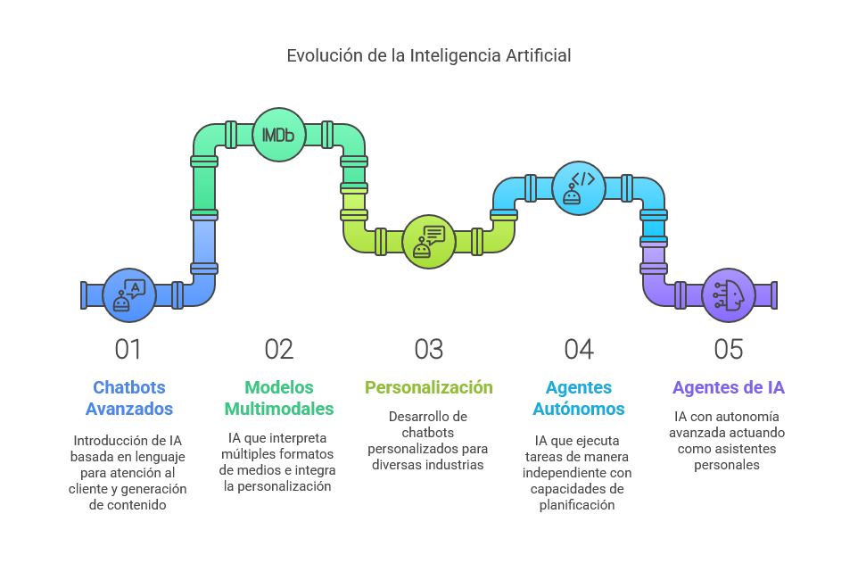

Desde el 30 de noviembre del año 2022, con el lanzamiento de ChatGPT 3.5 por OpenAI, la inteligencia artificial (IA) dejó de ser una visión futurista para convertirse en una herramienta accesible para millones de personas en todo el mundo con acceso a computadoras, tabletas o teléfonos. Su impacto ha transformado la vida cotidiana, optimizando procesos y mejorando la eficiencia en diversos sectores productivos, como la industria farmacéutica, la manufactura y la programación.
Desde entonces, cientos de empresas tecnológicas han lanzado sus propias versiones de inteligencia artificial, abarcando prácticamente todas las áreas del conocimiento. Estas herramientas van desde modelos especializados en la generación de texto hasta avanzados creadores de gráficos y muchas más, disponibles en el directorio de aifindy.com. Entre las más destacadas se encuentran Gemini, desarrollada por Google, y Claude, de Anthropic. Además, desde el 20 de enero de 2025, han irrumpido en el mercado innovadoras herramientas de inteligencia artificial chinas, como DeepSeek, respaldada por la firma de inversión Huanfang Quant, y QwenLM, desarrollada por Alibaba. Estas nuevas propuestas han demostrado que, incluso con menos recursos, es posible crear IA con un rendimiento competitivo a la altura de las principales del sector.
Crecimiento sin precedentes del mercado
Gracias a todo este desarrollo, la inteligencia artificial está experimentando un crecimiento sin precedentes a nivel mundial. Este auge se refleja en la adopción empresarial masiva y en proyecciones económicas que redefinen el panorama global. Sin embargo, este avance también plantea desafíos en el mercado laboral, por lo que es crucial que las políticas públicas y las estrategias empresariales se enfoquen en una transición laboral equitativa y en la capacitación de la fuerza laboral para maximizar los beneficios de la IA y mitigar sus posibles efectos adversos.
"En algo más de dos años, la IA ha pasado de ser una herramienta conversacional a convertirse en un colaborador autónomo, marcando el inicio de una nueva era tecnológica."
Evolución de la IA: 2022 – 2025
Desde el año 2022 hasta 2025, la inteligencia artificial ha experimentado una evolución vertiginosa, pasando de simples chatbots a sofisticados agentes autónomos con capacidades avanzadas:
Modelos como ChatGPT (GPT-3.5 y GPT-4) revolucionaron la comprensión del lenguaje, permitiendo la integración de chatbots en diversas plataformas como atención al cliente y generación de contenido, mientras herramientas como Microsoft Copilot y Notion AI mejoraron la productividad.
Surgieron modelos multimodales como GPT-4 y DALL·E 3, capaces de interpretar imágenes, audio y video, lo que impulsó la generación de contenido digital y la especialización de IA en sectores como educación y salud.
La IA dejó de ser solo un asistente para convertirse en un agente autónomo, con desarrollos como Auto-GPT y BabyAGI, que pueden planificar y ejecutar tareas sin intervención humana, además de agentes cognitivos que aprenden de la interacción.
Los agentes de IA se consolidan como asistentes inteligentes capaces de operar en educación, salud e industria, integrándose con la robótica, colaborando entre sí para resolver problemas y ofreciendo personalización avanzada basada en emociones y contexto personal.

El ecosistema actual: código abierto vs. modelos propietarios
Con la aparición de herramientas de IA como la china DeepSeek y la norteamericana Llama de Meta, ambas de código abierto y enfocadas en flexibilidad y colaboración, junto con modelos propietarios como ChatGPT, Gemini y Claude, optimizados para entornos empresariales, se ha dado inicio a una nueva era en la inteligencia artificial. La elección entre estas opciones dependerá de las necesidades específicas: innovación y personalización con acceso abierto, o facilidad de implementación y soporte especializado en soluciones comerciales, permitiendo optar entre alternativas gratuitas o de pago.
Perspectiva personal: herramientas en uso
Desde mi experiencia personal, la herramienta que más utilizo es ChatGPT versión de pago, porque es una opción accesible que me brinda acceso a una amplia variedad de herramientas avanzadas, incluyendo los GPTs (Generative Pre-trained Transformers), que son modelos de inteligencia artificial diseñados para procesar, generar y comprender texto de manera natural. Lo más interesante es que estos modelos pueden personalizarse para realizar tareas específicas, adaptándose a las necesidades del usuario en áreas como programación, generación de contenido, asistencia en investigación y muchas más. Tal como puedes ver en el siguiente video.
IA y educación en Latinoamérica: una prioridad urgente
Además, utilizo Claude y Gemini, y he explorado herramientas como Qwen, Sora para la generación de videos, y Leonardo AI para la creación de imágenes, entre muchas otras que facilitan mi trabajo y que documentaré en próximos artículos. La inteligencia artificial continúa evolucionando rápidamente e impactando múltiples sectores, por lo que su adopción en la educación en Latinoamérica debe ser una prioridad. Tanto estudiantes como docentes necesitan acceso a herramientas avanzadas que potencien el aprendizaje y la enseñanza, permitiéndoles estar a la par de sus pares en países desarrollados y obtener ventajas competitivas en un mundo cada vez más impulsado por la tecnología.